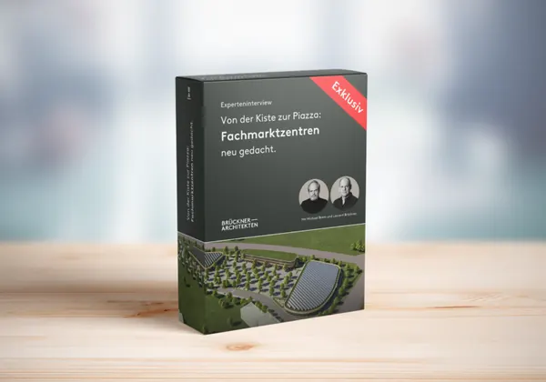
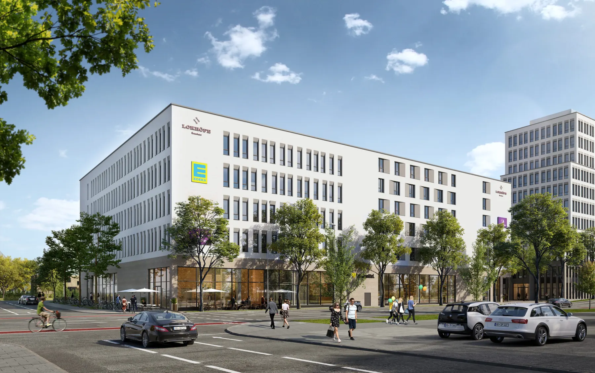

Sie möchten Ihre Immobilie erweitern oder benötigen zusätzlichen Raum für Ihr wachsenden Unternehmen? …
Unsere Fachmarktzentren vereinen:
Die Idee
Von der Kiste zur Piazza - Fachmarktzentrum neu gedacht
Wie können Fachmarktzentren nicht nur wirtschaftlich funktionieren, sondern auch als lebendige Ortszentren mit hoher Aufenthaltsqualität überzeugen?
Das Experteninterview bietet praxisorientierte Strategien zur Optimierung von Fachmarktzentren. Erfahren Sie, wie durch architektonische und städtebauliche Maßnahmen wirtschaftlicher Mehrwert geschaffen und die Aufenthaltsqualität erheblich verbessert werden kann.
Das erwartet Sie im Experteninterview:
Wertsteigerung & wirtschaftlicher Mehrwert durch intelligente Planung Effiziente Flächennutzung für mehr Ertrag und Aufenthaltsqualität Nachhaltige Konzepte mit Photovoltaik, Dachbegrünung & Geothermie KI-gestützte Planung für wirtschaftlich optimierte Lösungen Jetzt das Experteninterview mit Laurent Brückner (CEO Brückner Architekten) & Michael Brem (Head of Unit Design) ansehen und neue Perspektiven für Fachmarktzentren entdecken!
AMPERAUEN – Ein Fachmarktzentrum mit Weitblick

Hier wurde ein Fachmarktzentrum entwickelt, das neue Maßstäbe in Sachen Nachhaltigkeit setzt. Durch seine ressourcenschonende Bauweise und die gelungene Kombination aus Handel, Gesundheit und Gastronomie ist es ein zukunftsweisendes Vorbild für die Branche. Das Projekt erhielt hohe Zustimmung im Gemeinderat.
Besondere Merkmale:
Vollsortimenter-Fläche: ca. 3.050 m² Discounter-Fläche: ca. 1.720 m² Ärztehaus-/Drogeriemarkt-Fläche: ca. 4.380 m² ca. 280 Stellplätze, ca. 140 Fahrradplätze Die architektonische Gestaltung des Quartiers setzt auf Nachhaltigkeit, indem sie auf den nachwachsenden und weitgehend klimaneutralen Rohstoff Holz für die Fassadenkonstruktion zurückgreift. Ein umfassendes Nachhaltigkeitskonzept umfasst zudem Photovoltaikanlagen auf allen Gebäudedächern. Diese dienen nicht nur der Energiegewinnung, sondern auch als Retentionsflächen für Regenwasser.
Was sie verbindet
Architektur, die verbindet – Einkaufen, Verweilen, Begegnen
Fachmarktzentren sind mehr als reine Einkaufsorte. Sie übernehmen immer stärker die sozialen Funktionen, die früher Innenstädte hatten. Doch warum wirken viele dieser Zentren austauschbar und wenig einladend? Wir haben es uns zur Aufgabe gemacht, das zu ändern!
Unsere Fachmarktzentren setzen auf ein durchdachtes Konzept, das Architektur, Aufenthaltsqualität und Nachhaltigkeit verbindet. Während herkömmliche Fachmarktzentren oft als sterile Zweckbauten gestaltet sind, schaffen wir Räume mit Charakter. Begrünte Plätze, harmonisch abgestimmte Gebäudefassaden und eine klare städtebauliche Struktur sorgen für ein lebendiges Umfeld, das zum Verweilen einlädt.
Unsere Fachmarktzentren vereinen:
Unsere Fachmarktzentren vereinen Komfort mit Ästhetik und machen Einkaufen zum Erlebnis. Inspiriert von klassischen Stadtplätzen, schaffen wir attraktive Aufenthaltsbereiche mit Cafés, Sitzgelegenheiten und Grünzonen.
Nachhaltige Architektur trifft auf moderne Mobilität: CO₂-bindende Materialien, effiziente Energiesysteme und eine optimale Anbindung prägen unsere Planung. Begrünte Flächen verbessern das Mikroklima, arkadenartige Strukturen bieten Schutz, und flexible Konzepte sichern Zukunftsfähigkeit.
Für uns ist Nachhaltigkeit selbstverständlich: Photovoltaik, Geothermie und Dachbegrünung optimieren die Energieeffizienz, naturnahe Architektur integriert Grünräume, und ressourcenschonende Materialien sowie durchlässige Bodenbeläge reduzieren die Flächenversiegelung.
Das Projekt profitiert von einem vielfältigen Nutzungsmix!

An der Münchner Straße in Rosenheim entstanden 10.600 m² Bürofläche, ein Premier Inn Hotel mit 145 Zimmern, 2.200 m² Einzelhandel und ein begrüntes Parkhaus. Die LOKHÖFE Offices wurden von Züblin realisiert, die Werkplanung (ab LPH 5) stammt von Brückner Architekten.
Das Projekt ist Teil eines neuen Stadtquartiers mit 31.500 m² BGF, inklusive Seniorenwohnungen und Studentenapartments. Mieter sind u. a. das Hauptzollamt, Creditreform und Future Tec.
Die Lokhöfe streben eine DGNB-Gold-Zertifizierung an, nutzen CO₂-arme Wärme der Stadtwerke und erfüllen den KfW-55-Standard für hohe Energieeffizienz.
Der soziale Faktor
Der soziale Faktor: Begegnungsorte für die Gemeinschaft
Unsere Fachmarktzentren sind mehr als Einkaufsorte – sie sind lebendige Treffpunkte, die soziale Interaktion und Gemeinschaft fördern. Inspiriert von klassischen Marktplätzen, schaffen wir offene, einladende Flächen mit hoher Aufenthaltsqualität. Cafés und Restaurants laden zum Verweilen ein, während Grünanlagen und Sitzbereiche Erholungszonen für eine kurze Auszeit bieten. Gleichzeitig ermöglichen flexible Räume Kulturveranstaltungen, Märkte und Events, die das Quartier beleben. Unsere Architektur folgt dabei dem menschlichen Maßstab – intuitiv, komfortabel und ästhetisch.
Nachhaltigkeit ist für uns essenziell. Begrünte und geschützte Aufenthaltsbereiche verbessern das Mikroklima, während Arkaden nicht nur Wetter- und Sichtschutz bieten, sondern auch urbanes Flair schaffen. Wir setzen auf natürliche Materialien wie Holz und Naturstein sowie eine energieeffiziente Versorgung durch Photovoltaik und Geothermie. Dank flexibler Konzepte bleiben unsere Fachmarktzentren zukunftsfähig und passen sich an neue Anforderungen an.
So wird Einkaufen zum Erlebnis – komfortabel, nachhaltig und einladend.
Ihr Fachmarktzentrum der Zukunft – Jetzt informieren!
Unsere Handels- und Begegnungsräume bieten weit mehr als nur Einkaufsmöglichkeiten – sie fördern das soziale Miteinander, setzen neue Umweltstandards und sind wirtschaftlich nachhaltig. Lassen Sie uns gemeinsam die Nahversorgung neu denken!
Kontaktieren Sie uns für ein unverbindliches Erstgespräch und erfahren Sie mehr über die Vorteile eines modernen Fachmarktzentrums.


Wir haben IhrInteresse geweckt?
Sie haben Fragen oder wollen einen Termin vereinbaren?